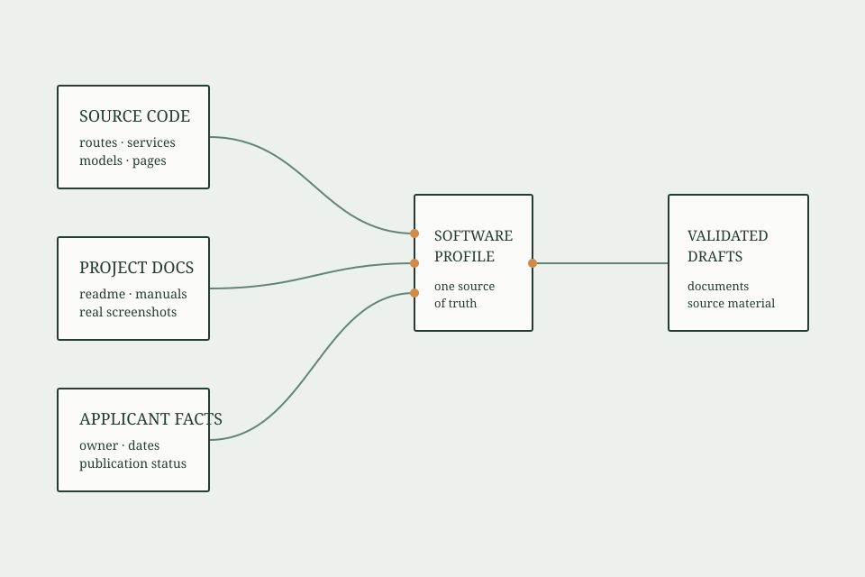

项目取证
识别技术栈与源文件，并将候选功能关联到代码、路由、模型或页面。
中国软件著作权登记材料
Copyright Forge 是面向中国软件著作权登记的材料工程 Agent。它从真实代码、申请人确认事实和可核验规则出发，生成并审核可继续修改的材料包。

即刻使用
无需解释工作流。复制以下指令，发送给支持 Agent Skills 的 Agent 即可。
研究方法，而非模板堆砌
识别技术栈与源文件，并将候选功能关联到代码、路由、模型或页面。
用一份 software-profile.yaml 管理软件名称、版本和经确认的申请事实。
生成可分页的源程序材料与质量报告，并检查身份一致性、待确认事项和潜在敏感信息。
工作流
读取项目结构、语言、框架和候选源代码。
将功能描述与页面、路由、服务和模型等可定位证据建立关联。
只请申请人确认代码无法判断的事实，并锁定统一事实源。
生成材料包，并通过事实、证据、一致性、源程序、隐私等质量门。
可信边界
不虚构功能、源代码、截图、著作权归属、开发关系、发表事实或日期。
不改动原始项目，不伪造官方申请表，不承诺登记结果。
当前支持普通交存；例外交存和复杂权属情形必须人工复核。